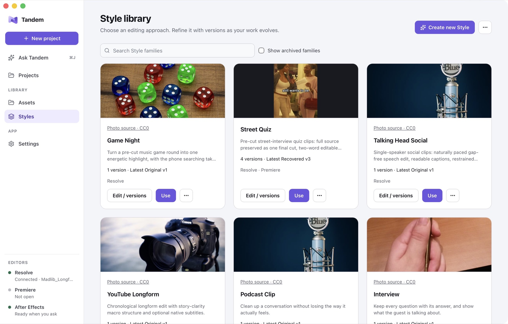

01 / Direction
Make the approach reusable
A Style records an editing approach and its versions. Current instructions can refine that direction for a particular edit, rather than forcing every video into the same treatment.
I built Tandem to explore how AI can assist video editing while keeping creative decisions in human hands. Reusable Styles, project context, and reviewable native timelines help connect direction to the work in the editor.

Editing brings together story, timing, sound, graphics, and many small technical decisions. Working across campaigns and video production, I kept encountering the same problem: useful creative direction was scattered across prompts, references, project files, and earlier edits.
I wanted assistance that could carry that context into a reviewable edit, while letting me keep working in familiar editing software. The question behind Tandem is how to make repeated work easier without flattening the creative choices that make a video feel right.
Tandem is an independent project. I define the product direction, translate my editing needs into workflows, and develop the application and editor connections. I also test it against my own production work and refine the interface around what becomes difficult in practice.
That work includes reusable editing Styles, project and asset organization, transcript-based interaction, timeline preparation, and the history needed to review changes. The creative direction and the responsibility for the finished edit remain mine.
01 / Direction
A Style records an editing approach and its versions. Current instructions can refine that direction for a particular edit, rather than forcing every video into the same treatment.
02 / Prepare
The Resolve workflow can prepare a first edit from selected media using the supported Style and connected tools. Source media stays intact, and the timeline remains available for normal editing.
03 / Review
A rendered preview, transcript, references, and change controls make it possible to inspect the edit and ask for specific revisions. The creator can refine pacing, captions, and reference choices in the context of the edit.
04 / Remember
Projects, Styles, assets, and history preserve the work around the timeline. Version history makes changes easier to follow and gives each project a clearer creative context.
The working application brings together a project browser, reusable editing Styles, source media, transcripts, and review controls. In the Resolve workflow, those pieces support preparing a first edit and refining it in a native timeline.
Street Quiz has been a useful proving ground: speech, reactions, captions, and music references all need to work together without losing the character of the original footage. Reviewing real edits helped me connect the technical workflow to decisions about rhythm and clarity.
The Style library shown above is the actual application interface. It organizes different editing approaches while keeping their versions and project context available for future work.
Tandem is an evolving independent project, with Resolve as its established editing path and selected Premiere workflows. I continue refining how creative direction, project context, and review connect across the supported tools.
The most useful part of the work has been learning how to express creative intent clearly enough that it can guide a tool without becoming a rigid template. Reusable Styles help, but the current brief and the creator’s judgment still have to lead.
My next focus is making the movement between direction, first edit, and revision more consistent, with the context of earlier decisions easy to pick up again.
For the research and planning side of this practice, see Music Ops ↗. Its source handoff keeps a saved script revision attached to the production context. For campaign work, explore Creative & Direction ↗.